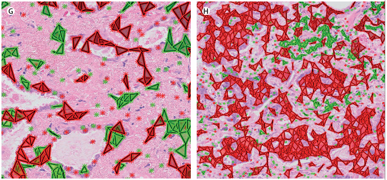
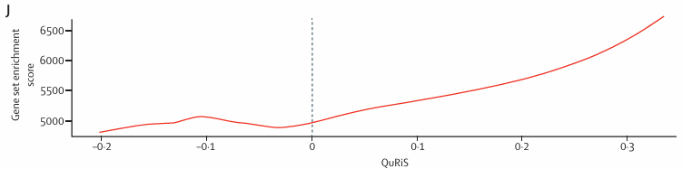
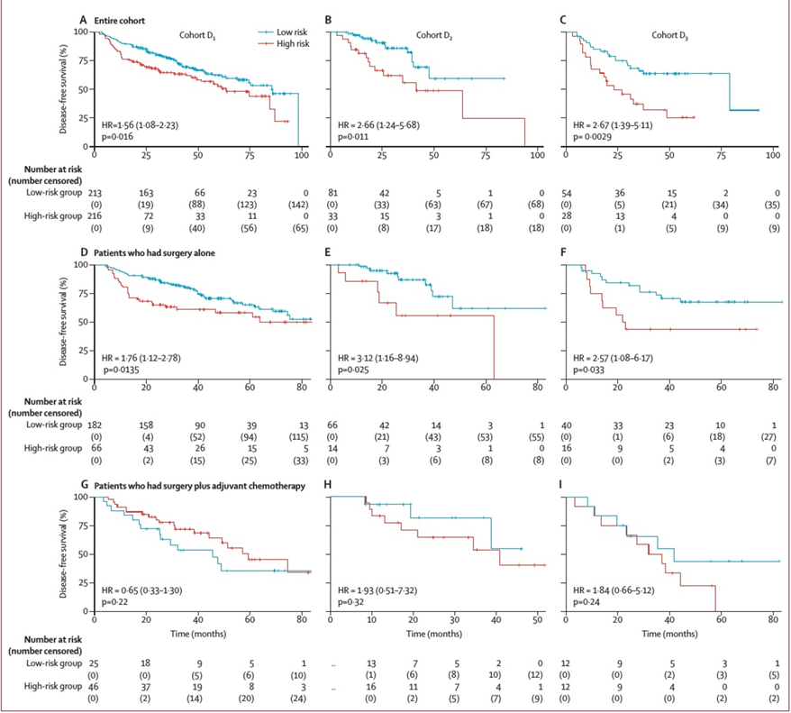
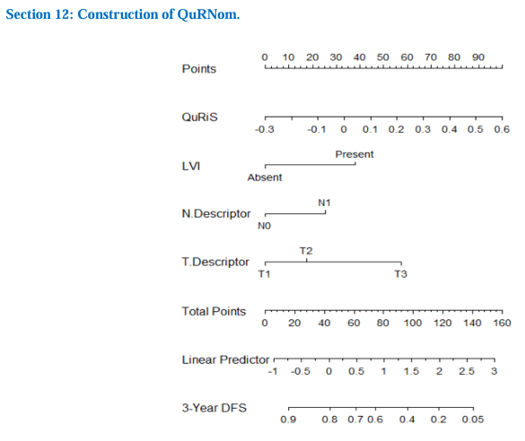

微观形态与放射基因组学分析
研究团队通过微观分析和放射基因组学研究，深入探索了QuRiS评分与肿瘤生物学特性之间的关联。
肿瘤微观形态差异

左边（图G）是低风险患者，右边（图H）是高风险患者。我们能清晰地看到，被QuRiS评定为'高风险'的肿瘤，在微观下表现出了极度密集、紧密结合的癌细胞团块（大片红色区域）。
这种野蛮生长的癌细胞簇形成了一道物理屏障，把代表我们免疫大军的淋巴细胞（绿色标记）死死挡在外面。
这证明了，我们在宏观CT上捕捉到的不良纹理，其本质是微观层面免疫细胞被排挤、免疫包围圈失效的高恶性表现。
放射基因组学分析
研究团队进一步做了放射基因组学分析，探索影像特征与基因表达之间的关系：
- 横轴 (X轴, QuRiS)：代表患者的CT影像评分。从左向右看，数值从负到正，代表患者的影像学风险越来越高。
- 纵轴 (Y轴)：代表某种恶性生物学通路的活跃程度（基因集富集得分）。
- 红线趋势：沿着X轴向右看，红线呈现出清晰的"上升趋势"，说明影像评分越高，该恶性通路越活跃。
这意味着，随着CT影像提示风险越高，患者体内的特定肿瘤恶性通路（例如血管生成通路、抑制免疫细胞聚集的趋化性通路）就越活跃。

化疗获益的精准预测
研究的核心发现是QuRiS评分能够精准预测哪些患者能从术后辅助化疗中获益。

生存分析结果
对比第二行（只做手术）和第三行（做了化疗）的生存曲线，我们可以得出以下关键结论：
- 高风险患者（红线）：做了化疗后，他们的复发风险显著降低，中位无病生存期大幅延长。
- 低风险患者（蓝线）：如果做了化疗，其生存获益甚至不如单纯做手术。
这具有极大的临床指导意义：
只有高风险患者才需要术后化疗；而低风险患者做化疗，不但没有额外好处，反而可能因为化疗的毒副反应受害。
临床意义
这项研究的发现对临床实践具有革命性的影响：
避免过度治疗
低风险患者可以安全地避免化疗带来的毒副作用和生活质量下降，同时不会影响其生存预后。
精准治疗
高风险患者能够被准确识别，确保他们接受必要的化疗干预，从而显著提高生存率。
医疗资源优化
医疗资源可以更合理地分配给真正需要的患者，提高 healthcare system的效率。
患者决策支持
基于客观数据的预测模型为医生和患者提供了更可靠的决策依据，减少了治疗选择的不确定性。
临床应用：QuRNom列线图
为了让QuRiS评分系统更易于临床应用，研究团队开发了一个综合预测列线图(QuRNom)，将影像组学评分与传统临床病理指标相结合。

QuRNom列线图的组成
研究团队并没有让AI单打独斗，而是将QuRiS评分与医生最看重的三大临床病理金标准结合起来：
- QuRiS评分：基于CT影像的放射组学风险评分
- 淋巴血管侵犯 (LVI)：肿瘤是否侵犯淋巴管或血管
- N分期：淋巴结转移情况
- T分期：原发肿瘤大小和侵犯范围
通过这种方式，QuRNom整合了影像学和病理学的优势，提供了更全面、更准确的预后预测。
QuRNom的使用方法
医生在门诊时可以按照以下步骤使用QuRNom列线图：
第一步：确定QuRiS评分
假设一位患者的QuRiS评分为0.3，从QuRiS轴上的0.3位置垂直向上画一条线，对应最上面的Points轴，大约能得70分。
第二步：评估其他临床指标
依次查找患者的其他临床指标：LVI（假设是Absent，对应0分）、N分期（假设是N1，对应约35分）、T分期（假设是T2，对应约20分）。
第三步：计算总分
将各项得分相加：70 + 0 + 35 + 20 = 125分。
第四步：查看预测结果
在Total Points轴上找到125分的位置，垂直向下画一条直线，对应到3-Year DFS轴。本例中，患者3年内不复发的概率约为15%，因此复发概率约为85%。
性能提升
数据显示，传统的TNM临床病理模型预测准确度（C-index）只有0.65到0.71；而加入了QuRiS评分后，综合列线图的准确度直接跃升到了0.74。
这完美证明了：AI影像组学不是要取代临床指标，而是作为一把极其锋利的辅助武器，与传统病理学强强联手，最终帮助医生实现早期肺癌的精准个性化治疗。